Guía
Cómo usar Pre Start: el contador de la siguiente carrera, el widget, los fondos, el calendario y la clasificación. Los nombres de botones son los de la app en español.
Qué es Pre Start
Pre Start muestra cuánto falta para la siguiente carrera y permite poner ese contador como widget en la pantalla de inicio del teléfono.
Dentro de la app también están los fondos de los circuitos, el calendario de la temporada, la comunidad y la clasificación de pilotos y constructores.
Requisito: Android 8 o superior. En Android 13 o superior, al abrirla pide permiso para enviar notificaciones.
Abrir la app
Al abrir, un splash rojo con el logo da paso a Inicio.
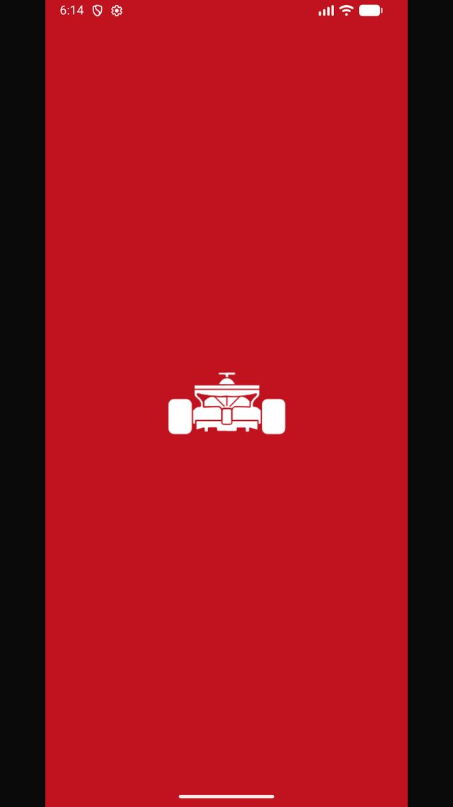
Abajo hay una barra con dos pestañas:
- Inicio. Carrera siguiente, widget, fondos, calendario y comunidad.
- Clasificación. Pilotos y constructores.
Arriba, en las dos pestañas, están el nombre Pre Start y tres botones: notificaciones, tema e idioma.
Deslizar hacia abajo actualiza los datos de la pestaña en la que estás.
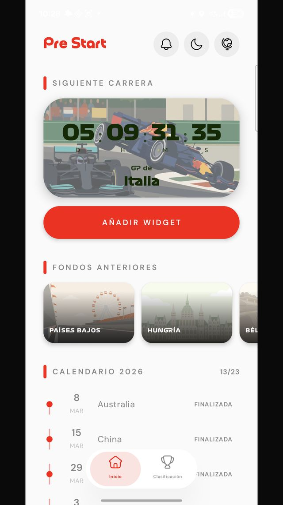
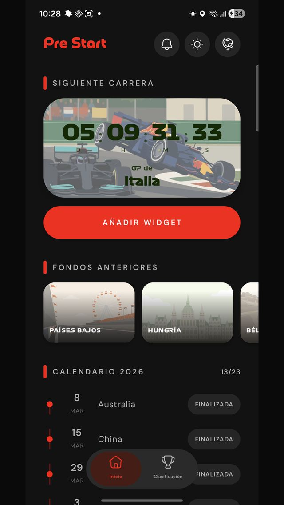
Inicio
La primera sección se llama SIGUIENTE CARRERA.
Ahí se ve la vista previa del widget: días, horas, minutos y segundos (D, H, M, S) y el texto GP de más el nombre de la carrera. El contador corre en vivo mientras la pestaña está visible.
Desde 15 minutos antes de la carrera, y hasta 2 horas después, el contador se sustituye por YA.
Debajo está el botón rojo AÑADIR WIDGET.
Añadir el widget
El widget se llama Pre Start. En el sistema se describe como «¡Contador para la siguiente carrera!».
Al pulsar AÑADIR WIDGET:
- Si el teléfono permite fijar widgets, Android muestra su propia ventana para colocarlo.
- Si no, la app abre un diálogo AÑADIR WIDGET con este texto: «Sigue estos pasos para agregar el widget F1 a tu pantalla principal:»
- Mantén presionada la pantalla principal
- Toca la opción «Widgets»
- Busca «Pre Start» y mantenlo presionado
- Arrástralo al lugar que prefieras
El botón del diálogo es ENTENDIDO.
Ese diálogo no tiene captura: en el teléfono de estas fotos el sistema sí permite fijar el widget, así que ese diálogo no llega a abrirse. Las ventanas del sistema salen en el idioma del teléfono. En estas fotos el teléfono está en inglés y la app en español.
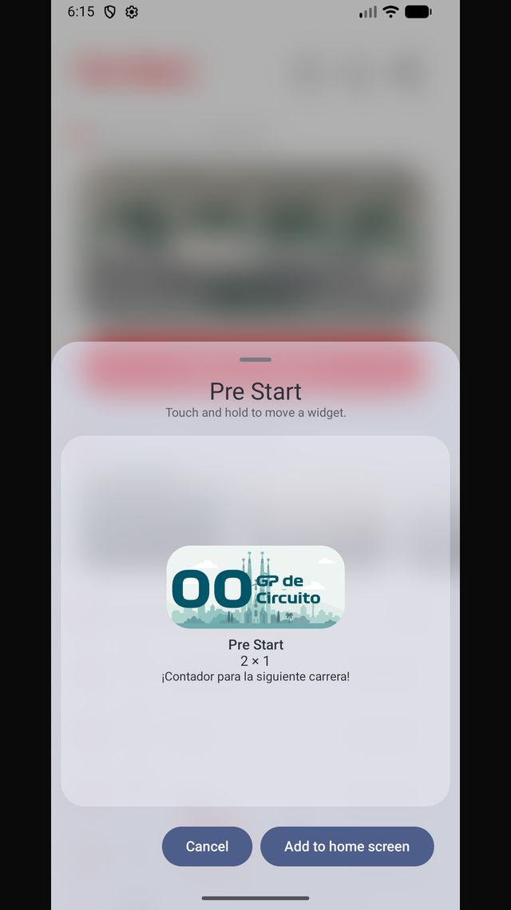
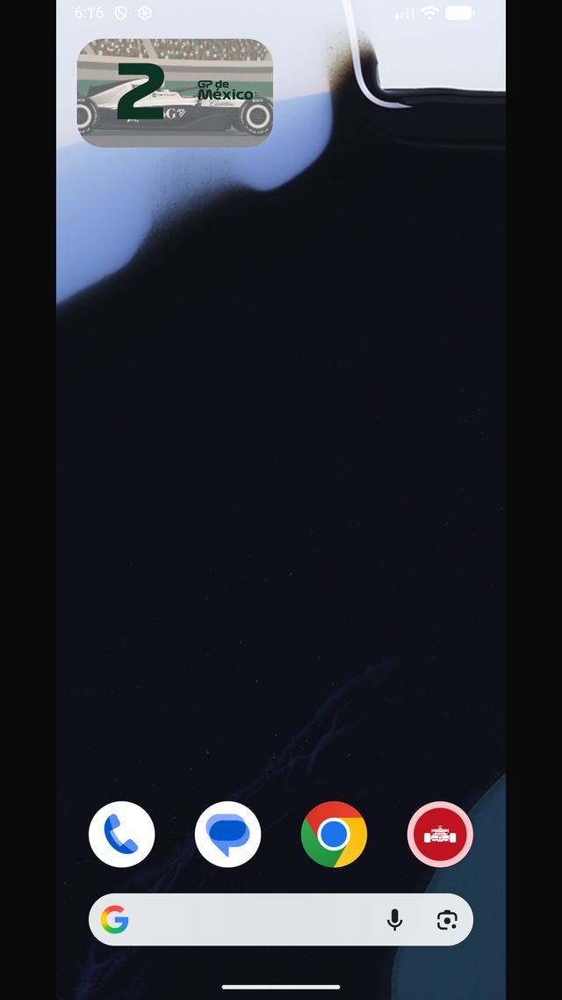
Fondos
La sección se llama FONDOS ANTERIORES. Es una fila horizontal.
- Cada carrera ya terminada que tenga fondo aparece con el nombre del país.
- La carrera en curso, si tiene fondo, aparece al final con la etiqueta ACTUAL y un borde rojo.
- Tocar una tarjeta abre el fondo grande, con el nombre del GP y, si existe, el autor. Se cierra con la X.
Si todavía no hay fondos, en lugar de la fila se lee: «Los fondos se desbloquean luego de cada carrera».
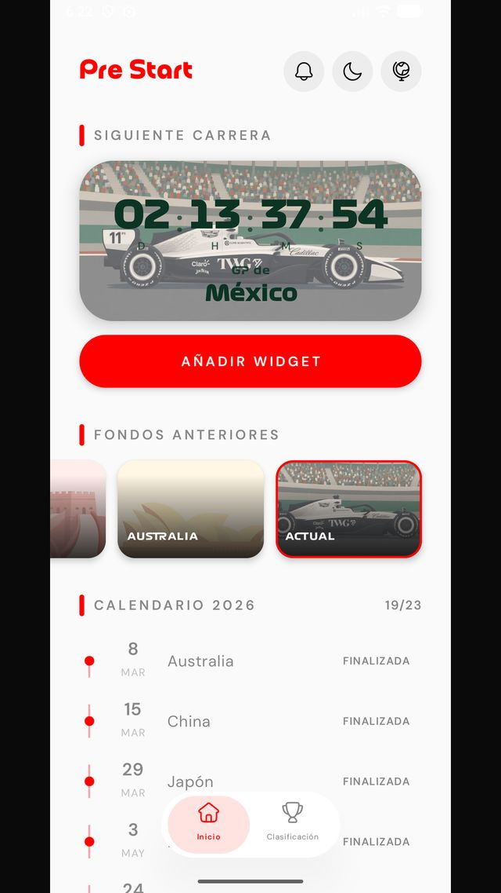
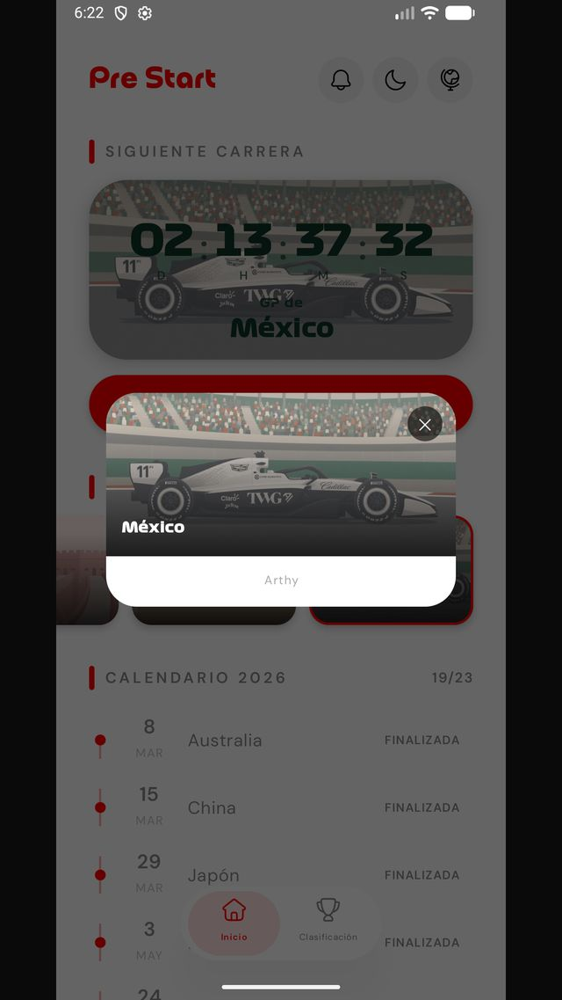
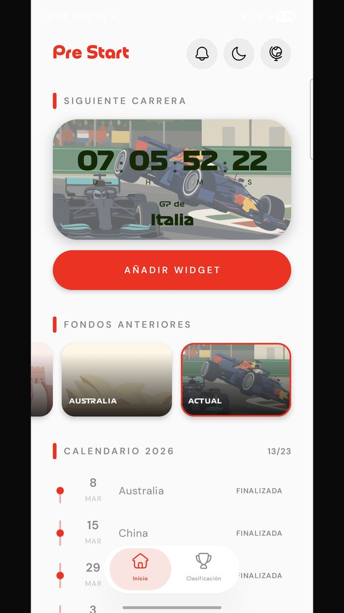
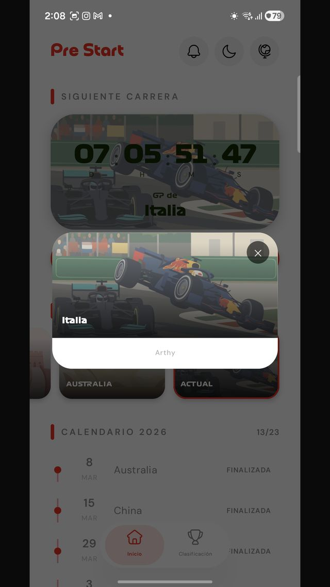
Calendario
La sección se llama CALENDARIO 2026. A la derecha va el avance, por ejemplo 13/23: la ronda actual sobre el total de carreras de la lista.
Cada fila tiene la fecha, el nombre de la carrera y, si aplica, una etiqueta:
- FINALIZADA, en gris, si la carrera ya pasó.
- SIGUIENTE, en rojo, en la próxima.
- Las demás no llevan etiqueta.
Tocar una fila abre el detalle de esa carrera.
La fecha de la fila sale en UTC. La hora local del teléfono o la del circuito se elige dentro del detalle, no en esta lista.
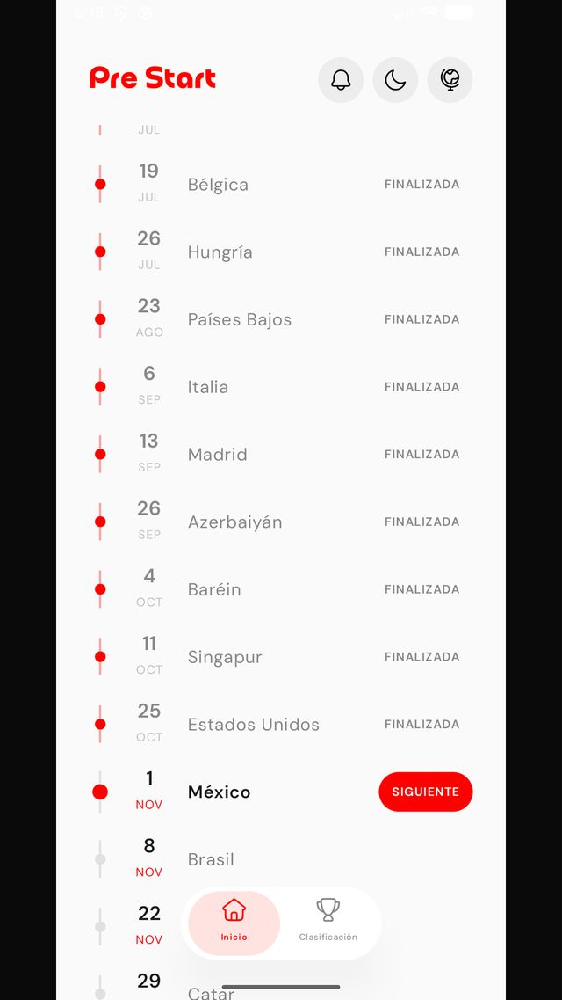
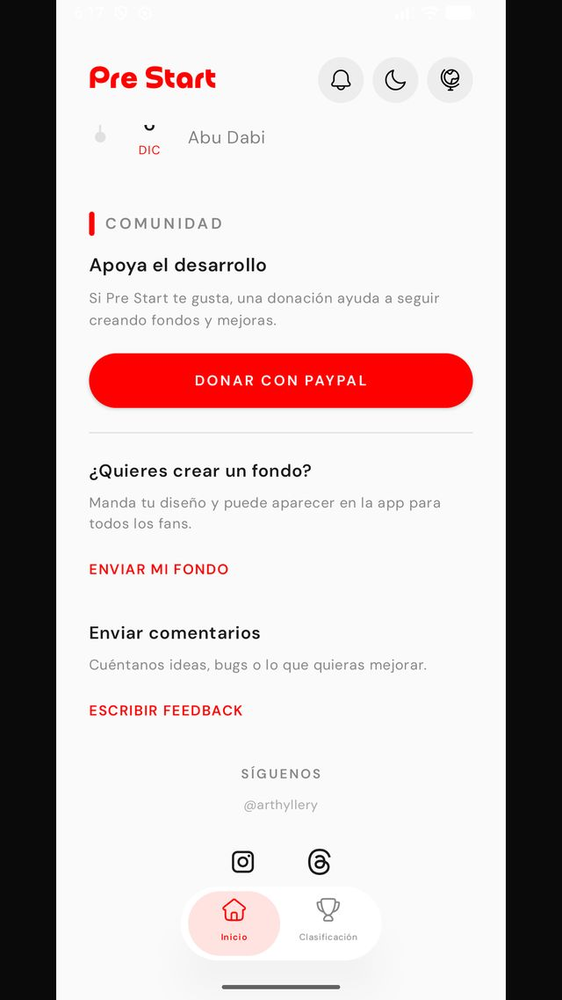
Detalle de una carrera
Se abre al tocar una carrera del calendario y se cierra con CERRAR. En las fotos es el GP de Australia, como ejemplo de la ventana.
Arriba dice GP de y el nombre. Hay dos pestañas: Horarios y Circuito.
Horarios
- La hora grande es la de CARRERA, con el día de la semana, el día y el mes.
- El resto de sesiones va agrupado por día: Libres 1, Libres 2, Libres 3, Qualy Sprint, Sprint y Clasificación. Solo aparecen las que traiga esa carrera.
- El interruptor Tu hora / Circuito cambia la zona. Debajo se aclara «Hora local de tu dispositivo» o «Hora local del circuito». La elección se guarda.
Circuito
- Mapa del trazado, nombre oficial, longitud (km), vueltas, distancia de carrera (km) y año del primer GP.
- Si no hay ficha: «Aún no hay info de este circuito.»
- Si el mapa no carga: «El mapa del circuito se fue a boxes.»
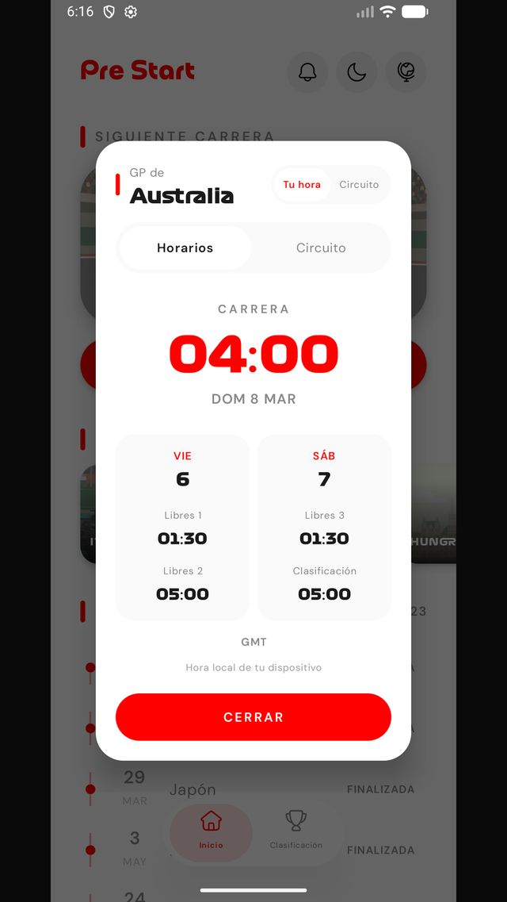
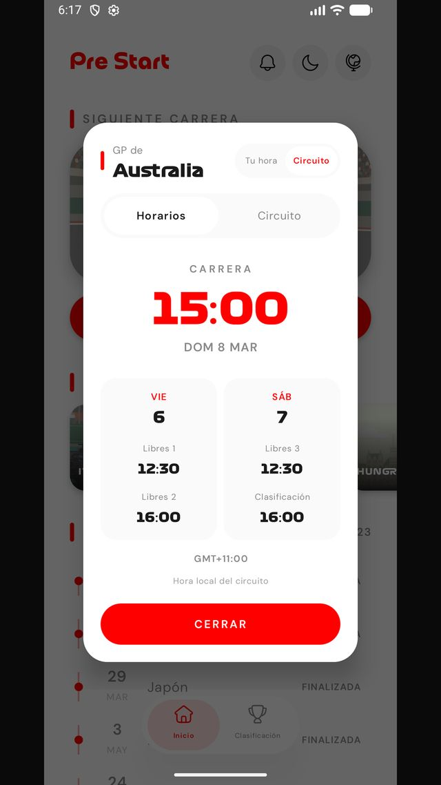
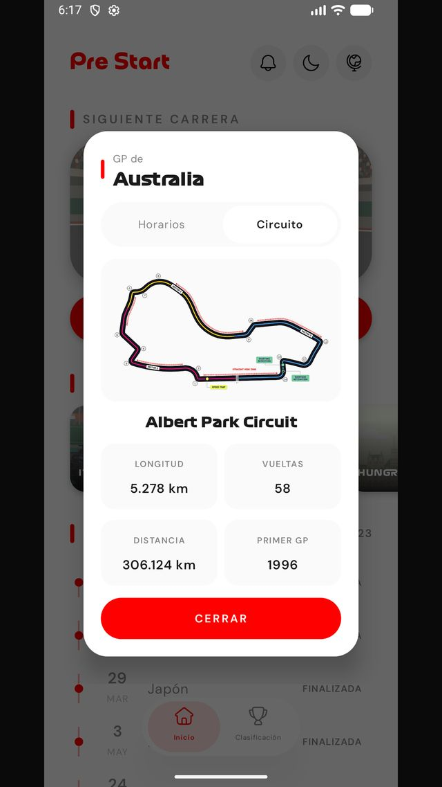
Comunidad
Está al final de Inicio, bajo el título COMUNIDAD.
- Apoya el desarrollo. «Si Pre Start te gusta, una donación ayuda a seguir creando fondos y mejoras.» El botón DONAR CON PAYPAL abre una página externa.
- ¿Quieres crear un fondo? «Manda tu diseño y puede aparecer en la app para todos los fans.» El enlace ENVIAR MI FONDO abre un formulario externo.
- Enviar comentarios. «Cuéntanos ideas, bugs o lo que quieras mejorar.» El enlace ESCRIBIR FEEDBACK abre un formulario dentro de la app.
El formulario pide nombre y mensaje. El botón ENVIAR sigue desactivado hasta que ambos tengan texto. El correo es opcional. Hay una casilla Respuesta anónima: al marcarla se oculta el correo y aparece la nota «Es importante poner tu correo para poder darte una mejor respuesta.» Mientras sale, el botón dice «Enviando…».
- Si llega: «¡Gracias! Tu mensaje ya llegó.»
- Si falla: «El mensaje se quedó en boxes. Revisa tu conexión e intenta de nuevo.»
- Un correo con formato inválido muestra «Email inválido».
Debajo está SÍGUENOS, con la cuenta @arthyllery y los botones de Instagram y Threads.
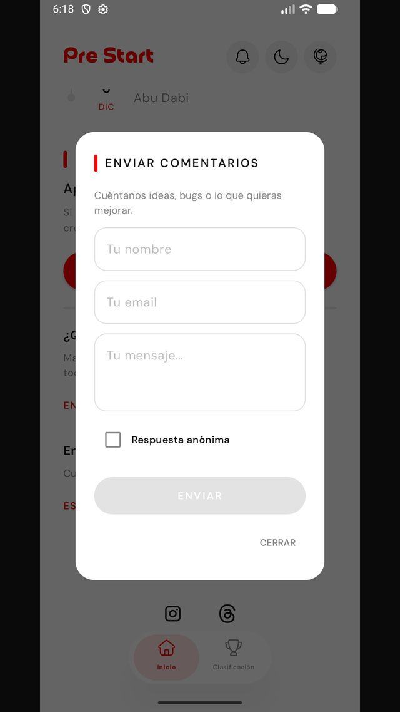
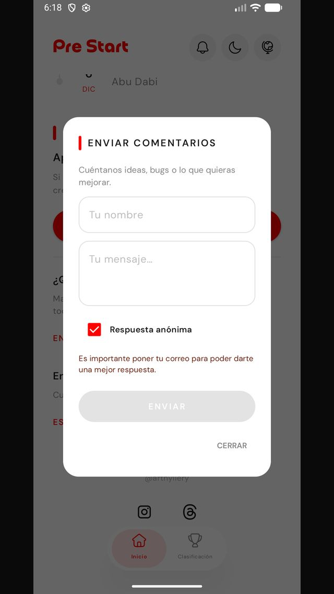
Clasificación
Pestaña Clasificación. Título CLASIFICACIÓN. Si hay ronda, debajo dice «Tras la ronda» y el número.
Dos segmentos: Pilotos y Constructores.
Si hay resultado reciente, un bloque ÚLTIMO GP muestra el nombre de la carrera y los cinco primeros, con posición, piloto, equipo y puntos.
Cada fila de la tabla lleva posición, código o nombre, equipo, puntos (PTS) y, en constructores, las victorias (Victorias).
Al entrar, si aún no hay datos, se ven filas en gris que parpadean. Si no hay clasificación: «No hay datos de clasificación por ahora.» Deslizar hacia abajo vuelve a pedir los datos.
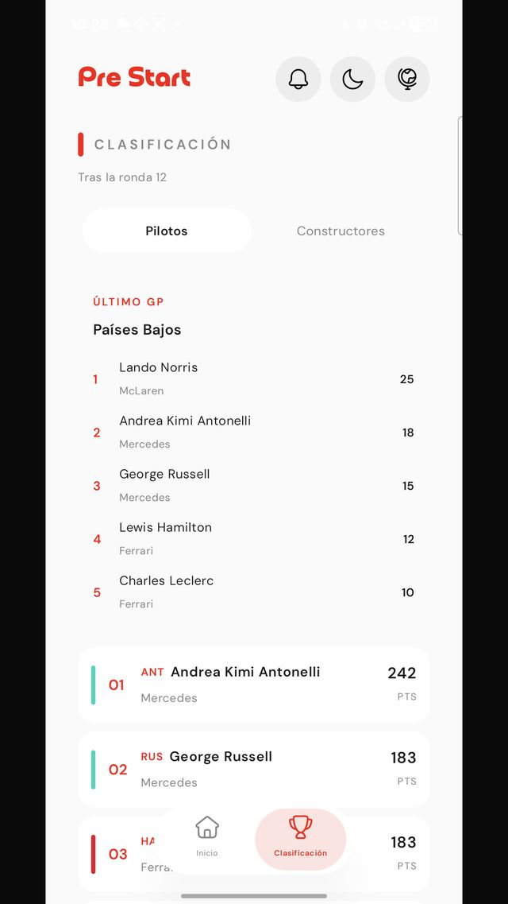
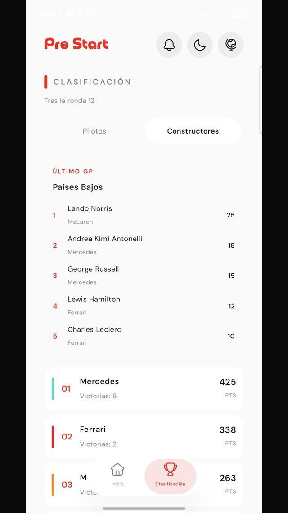
Idioma y tema
El botón del globo abre IDIOMA. Al elegir uno, la app cambia de inmediato. El botón de abajo es CERRAR.
- English
- Español
- Português (Brasil)
- Português
- Deutsch
- Français
- Italiano
La primera vez, si el teléfono no tiene uno de esos guardado, abre en español.
El botón de la luna o el sol alterna claro y oscuro. La primera vez sigue el tema del sistema; a partir del primer toque queda fijo en claro u oscuro.
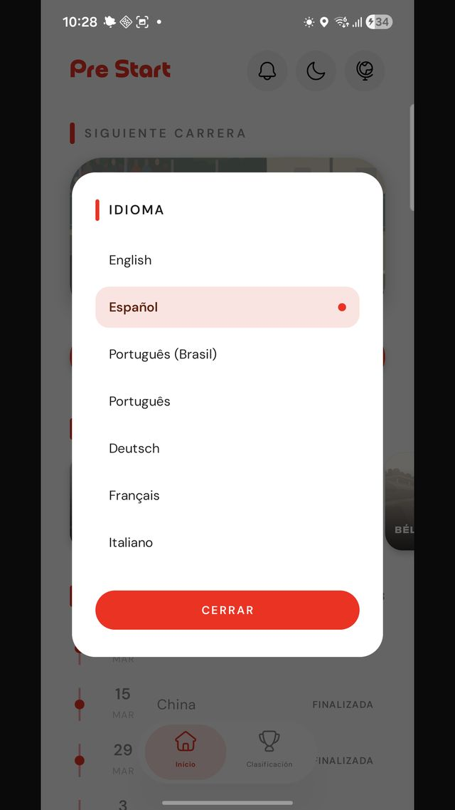
Notificaciones
Al abrir, en Android 13 o superior, el sistema pide permiso de notificaciones. El texto de esa ventana es el del teléfono, no el de la app.
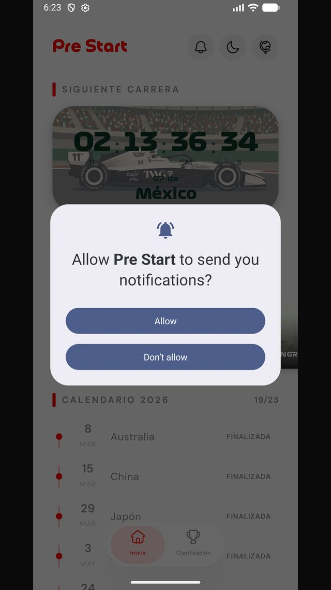
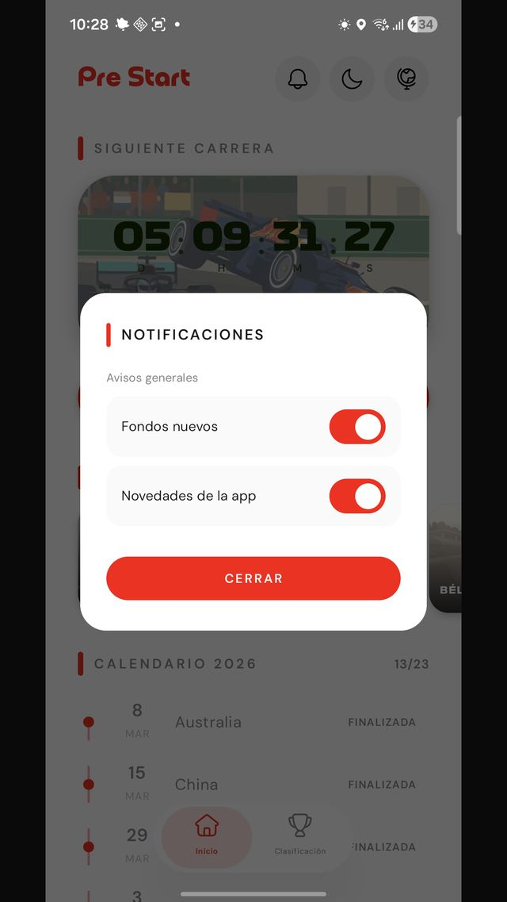
El botón de la campana abre NOTIFICACIONES, bajo el rótulo Avisos generales. Hay dos interruptores, ambos activos la primera vez:
- Fondos nuevos
- Novedades de la app
Se cierran con CERRAR. Esos dos interruptores no apagan los avisos de sesión.
Los avisos de sesión los programa la propia app, en hora local del circuito:
- 24 horas antes, solo de la carrera.
- 1 hora antes, de la carrera, la clasificación y el sprint.
- 15 minutos antes, de cualquier sesión que traiga el calendario.
Ejemplos de título, en español: «Mañana: GP de …», «Falta 1 hora — GP de …», «¡15 minutos! GP de …».
Sin conexión
Si no hay red, una franja dice: «Sin señal en pits — modo sin conexión». La app sigue mostrando el último calendario, los fondos y la clasificación que haya guardado.
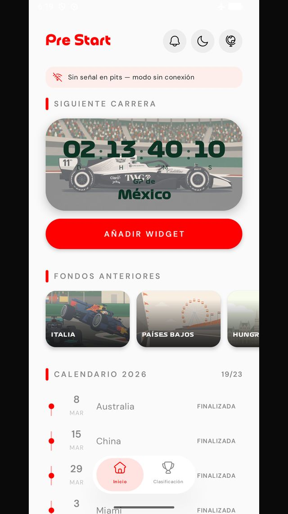
Si hay red pero un dato no se pudo refrescar:
- Calendario: «Caos en pits. Mostramos el calendario de respaldo.»
- Fondos: «Los fondos están en el garaje. No pudimos sincronizar.»
- Clasificación: «La FIA no mandó la clasificación. Desliza hacia abajo para reintentar.»
Si la versión instalada queda por debajo de la mínima, la app no entra a Inicio. Muestra Pre Start, NUEVA VERSIÓN, un mensaje y el botón ACTUALIZAR AHORA. Esa pantalla solo aparece cuando la versión mínima remota es mayor que la instalada.